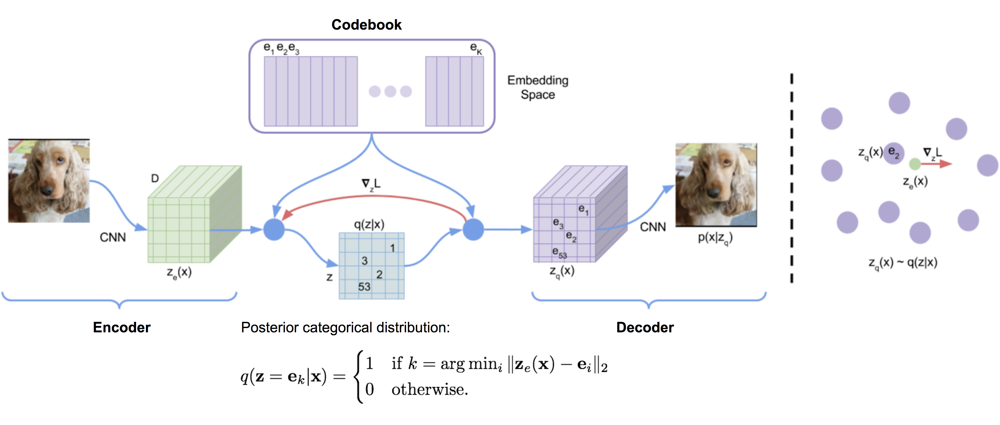
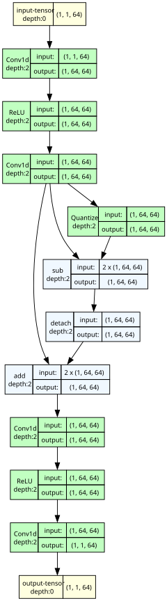
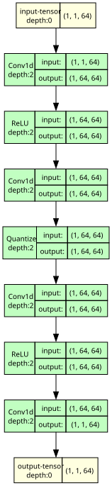
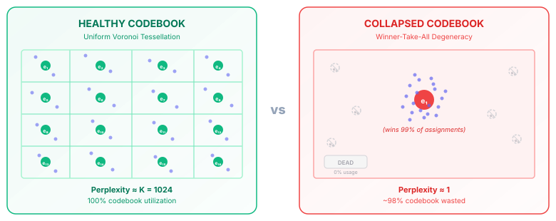

Vector Quantized Variational Autoencoders (VQ-VAE) offer a different approach to representation learning by replacing continuous Gaussian latents with discrete categorical codes. Forcing high-dimensional signals, like audio, through a finite codebook bottleneck solves issues like posterior collapse and provides direct control over the rate-distortion tradeoff. This formulation is the basis for many modern neural audio codecs and discrete audio language models.
In this post, we'll walk through the theoretical foundations of VQ-VAE, how gradient estimation works in this setup, and some of the practical challenges encountered during training, such as codebook collapse and capacity degeneration.
This post is self-contained, but it helps to have a basic familiarity with:
- What a Variational Autoencoder (VAE) is and the standard ELBO derivation
- Backpropagation, the chain rule, and what
detach()does in PyTorch - K-Means clustering and the idea of a Voronoi tessellation
If you are new to VAEs, a quick read of the original Kingma & Welling (2013) paper or any ELBO tutorial will give you all the background needed.
The Foundation: VQ-VAE & Information Bottlenecks
Historically, generative models for high-dimensional signals (like audio waveforms or spectrograms) relied heavily on continuous latent representations. Standard Variational Autoencoders (VAEs) mapped inputs to continuous Gaussian distributions \(\mathcal{N}(\mu, \sigma^2)\).
However, using continuous representations for audio autoencoding presents some structural challenges:
- Posterior Collapse: When paired with strong autoregressive decoders (like WaveNet), standard VAEs often experience posterior collapse. The decoder models \(p_\theta(x \mid z)\) based almost entirely on past audio samples \(x_{<t}\) and ignores the latent variable \(z\). The encoder posterior \(q_\phi(z \mid x)\) then collapses to the prior \(p(z) = \mathcal{N}(0, I)\), making the latent space largely uninformative (\(\mathcal{D}_{\text{KL}} \to 0\)).
- Discrete Modeling: Continuous vectors can't be directly fed into discrete sequence models (like standard Transformers or n-gram models) without some form of quantization.
The Vector Quantized Variational Autoencoder (VQ-VAE), introduced by van den Oord et al. in 2017, addresses this by making the latent space discrete. By quantizing the continuous encoder output into a sequence of codebook indices, VQ-VAE creates a strict information bottleneck. This helps prevent posterior collapse and translates the audio signal into a sequence of discrete tokens.
Variational & Information-Theoretic Derivation
We can understand the VQ-VAE objective by analyzing the Evidence Lower Bound (ELBO).
Derivation of the Discrete ELBO
For an input audio signal \(x \in \mathbb{R}^T\) and discrete latent variable \(z \in \{1, \dots, K\}^S\) (where \(S\) is the temporal sequence length of the latents and \(K\) is the codebook size), the log marginal likelihood satisfies:
\[\log p_\theta(x) = \log \sum_{z} p_\theta(x, z) = \log \sum_{z} q_\phi(z \mid x) \frac{p_\theta(x, z)}{q_\phi(z \mid x)}\]
Applying Jensen's Inequality (\(\log \mathbb{E}[Y] \ge \mathbb{E}[\log Y]\)) yields the ELBO:
\[\log p_\theta(x) \ge \mathbb{E}_{q_\phi(z \mid x)} [\log p_\theta(x \mid z)] - \mathcal{D}_{\text{KL}}(q_\phi(z \mid x) \parallel p(z))\]
The Deterministic Posterior & Constant KL Divergence
VQ-VAE defines a deterministic posterior distribution \(q_\phi(z = k \mid x)\). The encoder \(E_\phi(x)\) outputs a continuous latent vector \(z_e \in \mathbb{R}^D\). The quantization operator maps \(z_e\) to the nearest entry \(e_k\) in a learned codebook \(\mathcal{C} = \{e_1, e_2, \dots, e_K\} \subset \mathbb{R}^D\):
\[q_\phi(z = k \mid x) = \begin{cases} 1 & \text{if } k = \arg\min_{j \in \{1, \dots, K\}} \|E_\phi(x) - e_j\|_2 \\ 0 & \text{otherwise} \end{cases}\]
Assuming a uniform prior over the codebook entries, \(p(z = k) = \frac{1}{K}\) for all \(k \in \{1, \dots, K\}\):
\[\mathcal{D}_{\text{KL}}(q_\phi(z \mid x) \parallel p(z)) = \sum_{k=1}^K q_\phi(z = k \mid x) \log \frac{q_\phi(z = k \mid x)}{p(z = k)}\]
Since \(q_\phi(z = k^* \mid x) = 1\) for the winning index \(k^*\) and \(0\) elsewhere:
\[\mathcal{D}_{\text{KL}}(q_\phi(z \mid x) \parallel p(z)) = 1 \cdot \log \frac{1}{1/K} = \log K\]
Because \(\log K\) is a constant determined solely by the codebook size \(K\), the KL divergence term is completely independent of the model parameters \(\phi\) and \(\theta\).
Thus, during training, the KL divergence term contributes zero gradient and can be dropped entirely from optimization:
\[\max_{\phi, \theta} \text{ELBO} \iff \max_{\phi, \theta} \mathbb{E}_{q_\phi(z \mid x)} [\log p_\theta(x \mid z)]\]
In a standard continuous VAE, the KL term \(\mathcal{D}_{\text{KL}}(q_\phi(z \mid x) \| p(z))\) actively resists the encoder from using the latent space. This tension between KL and reconstruction causes posterior collapse — especially with strong autoregressive decoders. VQ-VAE's constant KL of \(\log K\) removes this tension entirely: the encoder is free to use all \(K\) codebook entries without any regularization penalty. The codebook size \(K\) is then the only knob controlling how much information the bottleneck permits, giving the designer precise rate-distortion control.
Rate-Distortion Interpretation
From a Rate-Distortion Theory perspective, VQ-VAE optimizes the distortion \(D = \mathbb{E}[d(x, \hat{x})]\) subject to a maximum bit-rate constraint \(R\).
For an audio waveform sampled at \(f_{\text{sample}}\) Hz downsampled by a temporal factor \(M\) (so the frame rate is \(f_s = \frac{f_{\text{sample}}}{M}\) frames/sec), the discrete latent space enforces a strict information rate bound:
\[R = f_s \cdot \log_2 K \quad \text{bits per second}\]
For instance, at \(f_{\text{sample}} = 24\,\text{kHz}\) with a downsampling factor \(M = 320\) (\(f_s = 75\,\text{Hz}\)) and codebook size \(K = 1024\) (\(\log_2 1024 = 10\,\text{bits}\)):
\[R = 75 \times 10 = 750 \quad \text{bits/sec} = 0.75 \quad \text{kbps}\]
Because \(R\) is fixed by architecture, the decoder \(p_\theta(x \mid z_q)\) is forced to reconstruct the maximum possible acoustic detail from at most \(0.75\,\text{kbps}\) of latent information. This hard capacity ceiling prevents the decoder from ignoring \(z_q\).
Architecture & Formal Loss Formulation

Mathematical Pipeline
- Encoder: Maps input \(x \in \mathbb{R}^T\) to continuous latents \(z_e = E_\phi(x) \in \mathbb{R}^{S \times D}\).
- Vector Quantization: Maps each frame \(z_e^{(t)} \in \mathbb{R}^D\) to its nearest codebook entry \(z_q^{(t)} \in \mathbb{R}^D\): \[k^{(t)} = \arg\min_{k \in \{1, \dots, K\}} \|z_e^{(t)} - e_k\|_2^2, \quad z_q^{(t)} = e_{k^{(t)}}\]
- Decoder: Maps quantized latents \(z_q \in \mathbb{R}^{S \times D}\) back to waveform space \(\hat{x} = D_\theta(z_q) \in \mathbb{R}^T\).
Complete Objective Function
Because the \(\arg\min\) operation in quantization is non-differentiable, gradient flow from the decoder to the encoder is blocked. VQ-VAE solves this by decomposing the objective into three explicit loss terms:
\[\mathcal{L}_{\text{VQ-VAE}} = \underbrace{\mathcal{L}_{\text{recon}}(x, \hat{x})}_{\text{Reconstruction Loss}} + \underbrace{\|\text{sg}[z_e] - z_q\|_2^2}_{\text{Codebook Loss}} + \underbrace{\beta \|\text{sg}[z_q] - z_e\|_2^2}_{\text{Commitment Loss}}\]
where \(\text{sg}[\cdot]\) is the stop-gradient operator (defined as \(\text{sg}[x] \equiv x\) during forward pass and \(\nabla_x \text{sg}[x] \equiv 0\) during backward pass).

Physical Breakdown of the Loss Terms
- Reconstruction Loss (\(\mathcal{L}_{\text{recon}}\)): Measures fidelity between \(x\) and \(\hat{x}\) (e.g., \(L_2\) error \(\|x - \hat{x}\|_2^2\) or multi-scale STFT loss). Updates decoder parameters \(\theta\) and, via STE, encoder parameters \(\phi\).
- Codebook Loss (\(\|\text{sg}[z_e] - z_q\|_2^2\)): Moves the selected codebook vectors \(e_k\) closer to the encoder outputs \(z_e\). Optimizes codebook entries \(\mathcal{C}\) using \(\ell_2\) dictionary learning.
- Commitment Loss (\(\beta \|\text{sg}[z_q] - z_e\|_2^2\)): Prevents the encoder output \(z_e\) from growing wildly in magnitude or fluctuating rapidly across Voronoi cell boundaries. The hyperparameter \(\beta\) (typically \(\beta \in [0.1, 0.5]\), default \(\beta=0.25\)) controls how strongly the encoder commits to the chosen codebook entry.
Gradient Flow & The Straight-Through Estimator (STE)
The Non-Differentiability Problem
The quantization function \(Q(z_e) = e_{\arg\min_k \|z_e - e_k\|_2}\) is a step function. Its derivative with respect to \(z_e\) is zero everywhere except at the cell boundaries between codebook vectors, where it is undefined:
\[\frac{\partial z_q}{\partial z_e} = 0 \quad \text{almost everywhere}\]
If standard backpropagation is applied, the chain rule yields \(\frac{\partial \mathcal{L}}{\partial \phi} = \frac{\partial \mathcal{L}}{\partial \hat{x}} \frac{\partial \hat{x}}{\partial z_q} \frac{\partial z_q}{\partial z_e} \frac{\partial z_e}{\partial \phi} = 0\), completely freezing the encoder weights \(\phi\).
The Straight-Through Estimator Trick
To bypass this, VQ-VAE employs the Straight-Through Estimator (STE) (Bengio et al., 2013). The STE replaces the zero derivative \(\frac{\partial z_q}{\partial z_e}\) with the identity matrix \(I\):
\[\frac{\partial \mathcal{L}}{\partial z_e} \approx \frac{\partial \mathcal{L}}{\partial z_q}\]
In autograd computational graphs, this gradient bypass is implemented cleanly using detach():
\[z_q^{\text{STE}} = z_e + \text{sg}[z_q - z_e]\]
- Forward Pass: \(z_q^{\text{STE}} = z_e + (z_q - z_e) = z_q\). The decoder receives the exact discrete quantized vector \(z_q\).
- Backward Pass: \(\frac{\partial z_q^{\text{STE}}}{\partial z_e} = \frac{\partial z_e}{\partial z_e} + \frac{\partial \text{sg}[z_q - z_e]}{\partial z_e} = I + 0 = I\). The gradient \(\nabla_{z_q} \mathcal{L}\) passes directly to \(z_e\) unmodified.
The entire Straight-Through Estimator trick reduces to a single line:
z_q_st = z_e + (z_q - z_e).detach()
In the forward pass, .detach() has no effect: z_q_st == z_q. In the backward pass, autograd treats the detached term as a constant, so dL/dz_e = dL/dz_q_st — the gradient flows straight through as if quantization never happened. That's it. The whole complexity of discrete gradient estimation, solved by one .detach().
Below are PyTorch computation graphs comparing gradient flow with and without the STE bypass:

sub → detach → add bypass creates an identity gradient path from \(z_q\) back to \(z_e\).
Quantize node blocks all backward gradients, completely freezing encoder weights.Theoretical Analysis of STE Gradient Bias
While STE enables end-to-end learning, it is a biased gradient estimator. The true directional gradient of the expectation \(\nabla_{z_e} \mathbb{E}[\mathcal{L}]\) differs from the sample STE gradient \(\nabla_{z_q} \mathcal{L}\).
When \(\|z_e - z_q\|_2\) is large, the identity approximation \(\frac{\partial z_q}{\partial z_e} \approx I\) severely misleads encoder optimization. This bias directly motivates alternative gradient approximations:
| Gradient Estimator | Mathematical Formulation | Trade-off / Properties |
|---|---|---|
| Straight-Through (STE) | \(z_q^{\text{STE}} = z_e + \text{sg}[z_q - z_e]\) | Simple, low variance, biased gradient. Standard in VQ-VAE. |
| Gumbel-Softmax (Jang et al.) | \(y_k = \frac{\exp((\log \pi_k + g_k)/\tau)}{\sum_j \exp((\log \pi_j + g_j)/\tau)}\) | Differentiable continuous relaxation. Unbiased as temperature \(\tau \to 0\), but high variance at low \(\tau\). |
| Soft-to-Hard Quantization | \(z_q = \sum_k \text{softmax}(-\|z_e - e_k\|_2^2 / \tau) e_k\) | Smooth interpolation during early training; annealed to hard assignment. |
| Finite Scalar Quantization (FSQ) | \(z_q = f(z_e)\) via bounded rounding | Bypasses vector codebooks entirely by rounding scalar channels directly. |
Core Challenges & Pathologies
While the standard VQ-VAE formulation is neat, it can suffer from failure modes that degrade codebook efficiency and reconstruction quality.

Challenge: Codebook Collapse
The Issue: Vector quantization partitions \(\mathbb{R}^D\) into a Voronoi tessellation. Early in training, due to initialization, a small subset of codebook vectors might lie closer to the encoder outputs \(z_e\). These "winner" vectors receive all assignments during the \(\arg\min\) search and get updated via gradients. Meanwhile, the majority of the codebook vectors might receive zero assignments (\(\mathbb{E}[q(z=k \mid x)] = 0\)). Without assignments, they receive no gradient updates and remain "dead" permanently.
Measuring Collapse: We can measure codebook utilization using Perplexity (the exponential of the entropy of the assignment probabilities):
\[H(\mathcal{C}) = -\sum_{k=1}^K p_k \log p_k, \quad p_k = \frac{1}{N} \sum_{i=1}^N \mathbb{I}(k^{(i)} = k)\]
\[\text{Perplexity} = \exp\left(H(\mathcal{C})\right) = \exp\left(-\sum_{k=1}^K p_k \log p_k\right)\]
- For a uniformly utilized codebook, \(p_k = \frac{1}{K}\) and \(\text{Perplexity} = K\) (maximum capacity).
- Under severe collapse, \(\text{Perplexity} \to 1\). A codebook with \(K=1024\) entries might end up with an effective perplexity of only 10, meaning most of the capacity is unused.
Codebook collapse does not cause an obvious training spike or NaN. The reconstruction loss may still decrease and the model may appear to converge. The only reliable signal is monitoring Perplexity during training. A healthy codebook with \(K = 1024\) entries should have perplexity steadily climbing toward \(1024\) over the first few thousand steps. If perplexity plateaus below \(50\) or \(100\), collapse has already occurred — and no amount of continued training will recover the dead entries without explicit re-initialization. Always log perplexity alongside your reconstruction loss.
Solutions to Codebook Collapse
Exponential Moving Average (EMA) Codebook Updates
Instead of optimizing codebook vectors using gradient descent via the codebook loss \(\|\text{sg}[z_e] - z_q\|_2^2\), we update codebook entries \(\mathcal{C}\) using online K-means clustering with Laplace smoothing.
For a mini-batch of continuous latents \(\{z_e^{(i)}\}_{i=1}^N\) with assigned cluster indicators \(r_{ik} = \mathbb{I}(k^{(i)} = k)\):
\[N_k^{(t)} = \gamma N_k^{(t-1)} + (1 - \gamma) \sum_{i=1}^N r_{ik}\]
\[m_k^{(t)} = \gamma m_k^{(t-1)} + (1 - \gamma) \sum_{i=1}^N r_{ik} z_e^{(i)}\]
\[e_k^{(t)} = \frac{m_k^{(t)} + \epsilon \cdot \frac{1}{K}}{N_k^{(t)} + \epsilon}\]
where \(\gamma \in (0, 1)\) is the EMA decay factor (typically \(\gamma = 0.99\)), and \(\epsilon\) is a Laplace smoothing constant to prevent division by zero.
Why EMA helps: It decouples codebook updates from the optimizer's learning rate, updating centroids more stably based on batch statistics. This also removes the need for the codebook loss term.
Dead Code Re-initialization (Codebook Resetting)
During training, we track the rolling usage count \(N_k\) for every entry \(e_k\). If \(N_k < \text{threshold}\) over a window of batches (indicating a dead vector), we forcibly reset \(e_k\) by sampling a random continuous encoder output \(z_e^{(j)}\) from the current batch:
\[e_k \leftarrow z_e^{(j)} + \mathcal{N}(0, \sigma^2 I)\]
This injects dead vectors back into active regions of the latent space, guaranteeing high perplexity throughout training.
\(L_2\) Normalization / Spherical Quantization
High-dimensional \(L_2\) distance suffers from the curse of dimensionality: magnitude variations in \(z_e\) can dominate the distance lookup.
Spherical quantization projects both encoder output \(z_e\) and codebook vectors \(e_k\) onto the unit hyper-sphere \(\mathbb{S}^{D-1}\):
\[\bar{z}_e = \frac{z_e}{\|z_e\|_2}, \quad \bar{e}_k = \frac{e_k}{\|e_k\|_2}\]
The nearest-neighbor lookup simplifies to maximizing Cosine Similarity:
\[k^* = \arg\min_k \|\bar{z}_e - \bar{e}_k\|_2^2 = \arg\max_k (\bar{z}_e^\top \bar{e}_k)\]
Normalizing vectors eliminates scale explosion and significantly stabilizes codebook utilization (adopted in SoundStream, ViT-VQGAN, and Descript Audio Codec).
Subspace Projection (Factorized Quantization)
Instead of performing vector quantization in the raw encoder channel dimension \(D\) (e.g., \(D=512\)), we project \(z_e\) down to a low-dimensional subspace \(d \ll D\) (e.g., \(d=8\) or \(d=32\)) via linear projection \(W_{\text{in}} \in \mathbb{R}^{D \times d}\) before codebook lookup:
\[z_e^{\text{proj}} = z_e W_{\text{in}} \in \mathbb{R}^{d}, \quad z_q^{\text{proj}} = \arg\min_{e_k \in \mathbb{R}^d} \|z_e^{\text{proj}} - e_k\|_2^2\]
\[z_q = z_q^{\text{proj}} W_{\text{out}} \in \mathbb{R}^D\]
Reducing the dimensionality \(d\) reduces distance concentration effects, dramatically mitigating codebook collapse.
Challenge: Audio-Specific Bottlenecks (Time vs. Frequency)
Audio signals have fine-grained temporal variation (e.g., 24,000 to 44,100 samples per second).
When designing a VQ-VAE for waveforms, we face a trade-off:
- Large Downsampling Factor \(M\): Gives a lower token rate, but each discrete token \(z_q^{(t)}\) must represent a lot of complex acoustic information. A single codebook (e.g., \(K=1024\)) often lacks the capacity for this, leading to muffled or degraded reconstructions.
- Small Downsampling Factor \(M\): Improves acoustic fidelity but increases the token rate significantly. Downstream autoregressive models trained on these sequences then face context window limits and higher computational costs.
This trade-off is a primary reason why modern architectures moved toward multi-scale representations (like VQ-VAE-2) and Residual Vector Quantization (RVQ, seen in SoundStream and EnCodec).
PyTorch Implementation: Research-Grade Vector Quantizer
To help make these concepts concrete, let me show you how to implement a production-grade VectorQuantizer in PyTorch.
This self-contained module handles Straight-Through Estimation (STE), L2 and Cosine (spherical) distance metrics, EMA codebook updates with Laplace smoothing, perplexity tracking, and automatic dead-code re-initialization to combat codebook collapse.
import torch
import torch.nn as nn
import torch.nn.functional as F
class VectorQuantizer(nn.Module):
"""
Research-Grade Vector Quantizer supporting:
1. Straight-Through Estimator (STE)
2. L2 and Cosine Similarity (Spherical) Distance Metrics
3. Exponential Moving Average (EMA) Codebook Updates
4. Perplexity / Codebook Entropy Tracking
5. Dead-Code Automatic Re-initialization
Args:
num_embeddings (int): Size of codebook (K).
embedding_dim (int): Dimension of latent space (D).
beta (float): Scaling factor for the commitment loss (default 0.25).
distance_metric (str): 'l2' or 'cosine' (spherical quantization).
use_ema (bool): Use EMA codebook updates instead of the gradient codebook loss.
decay (float): EMA decay rate (gamma).
epsilon (float): Laplace smoothing constant for numerical stability.
threshold_dead_limit (float): Cluster-size threshold below which a code is re-initialized.
"""
def __init__(
self,
num_embeddings: int = 1024,
embedding_dim: int = 128,
beta: float = 0.25,
distance_metric: str = "cosine", # 'l2' or 'cosine'
use_ema: bool = True,
decay: float = 0.99,
epsilon: float = 1e-5,
threshold_dead_limit: float = 1.0,
):
super().__init__()
self.num_embeddings = num_embeddings
self.embedding_dim = embedding_dim
self.beta = beta
self.distance_metric = distance_metric
self.use_ema = use_ema
self.decay = decay
self.epsilon = epsilon
self.threshold_dead_limit = threshold_dead_limit
# Codebook weights
self.codebook = nn.Embedding(num_embeddings, embedding_dim)
if not use_ema:
self.codebook.weight.data.uniform_(
-1.0 / num_embeddings, 1.0 / num_embeddings
)
else:
self.codebook.weight.data.normal_()
# Register buffers for EMA tracking
self.register_buffer("ema_cluster_size", torch.zeros(num_embeddings))
self.register_buffer("ema_w", self.codebook.weight.data.clone())
def forward(self, z_e: torch.Tensor) -> tuple[torch.Tensor, torch.Tensor, torch.Tensor, torch.Tensor]:
"""
Args:
z_e (torch.Tensor): Continuous encoder output of shape (B, D, T).
Returns:
z_q_st (torch.Tensor): Quantized tensor with STE gradient flow (B, D, T).
indices (torch.Tensor): Discrete codebook indices (B, T).
loss (torch.Tensor): Total VQ loss (scalar).
perplexity (torch.Tensor): Codebook utilization metric (scalar).
"""
# 1. Reshape z_e from (B, D, T) -> (B*T, D)
B, D, T = z_e.shape
z_e_flat = z_e.permute(0, 2, 1).contiguous().view(-1, D)
# 2. Compute distances between z_e and codebook entries
if self.distance_metric == "cosine":
z_e_norm = F.normalize(z_e_flat, dim=-1)
codebook_norm = F.normalize(self.codebook.weight, dim=-1)
# Distance = 2 * (1 - cosine_similarity)
distances = 2.0 * (1.0 - torch.matmul(z_e_norm, codebook_norm.T))
else: # L2 distance: ||z_e - e||^2 = ||z_e||^2 - 2<z_e, e> + ||e||^2
distances = (
torch.sum(z_e_flat ** 2, dim=1, keepdim=True)
- 2 * torch.matmul(z_e_flat, self.codebook.weight.T)
+ torch.sum(self.codebook.weight ** 2, dim=1, keepdim=True).T
)
# 3. Nearest-neighbor lookup (argmin)
indices = torch.argmin(distances, dim=1) # (B*T,)
encodings = F.one_hot(indices, self.num_embeddings).float() # (B*T, K)
z_q_flat = self.codebook(indices) # (B*T, D)
# 4. Perplexity / codebook entropy tracking
perplexity = compute_perplexity(encodings)
# 5. Codebook updates: EMA vs gradient loss
if self.training and self.use_ema:
with torch.no_grad():
# Update EMA cluster sizes with Laplace smoothing
n_total = torch.sum(encodings, dim=0)
self.ema_cluster_size.data.mul_(self.decay).add_(
n_total, alpha=1 - self.decay
)
# Update EMA embedding sums
dw = torch.matmul(encodings.T, z_e_flat)
self.ema_w.data.mul_(self.decay).add_(dw, alpha=1 - self.decay)
# Laplace-smoothed centroid calculation
n = torch.sum(self.ema_cluster_size)
smoothed_cluster_size = (
(self.ema_cluster_size + self.epsilon)
/ (n + self.num_embeddings * self.epsilon)
* n
)
# Update codebook weights
updated_weight = self.ema_w / smoothed_cluster_size.unsqueeze(1)
self.codebook.weight.data.copy_(updated_weight)
# Dead-code re-initialization check
dead_indices = (
self.ema_cluster_size < self.threshold_dead_limit
).nonzero()
if len(dead_indices) > 0:
random_samples = z_e_flat[
torch.randint(0, z_e_flat.size(0), (len(dead_indices),))
]
self.codebook.weight.data[dead_indices.squeeze(1)] = random_samples
self.ema_w.data[dead_indices.squeeze(1)] = random_samples
# 6. Loss calculation
recon_z_q = z_q_flat.view(B, T, D).permute(0, 2, 1).contiguous()
if self.use_ema:
# EMA removes the codebook loss; only the commitment loss remains
commitment_loss = F.mse_loss(recon_z_q.detach(), z_e)
vq_loss = self.beta * commitment_loss
else:
codebook_loss = F.mse_loss(recon_z_q, z_e.detach())
commitment_loss = F.mse_loss(recon_z_q.detach(), z_e)
vq_loss = codebook_loss + self.beta * commitment_loss
# 7. Straight-Through Estimator (STE)
# Forward pass uses recon_z_q; backward pass flows directly to z_e
z_q_st = z_e + (recon_z_q - z_e).detach()
indices_out = indices.view(B, T)
return z_q_st, indices_out, vq_loss, perplexity
def compute_perplexity(encodings: torch.Tensor) -> torch.Tensor:
"""
Computes codebook utilization perplexity from one-hot encodings.
Perplexity = exp(H(p)) = exp(-sum_k p_k * log(p_k)), where p_k is the
average assignment probability of codebook entry k. It ranges from 1
(all frames assigned to a single entry) to K (uniform utilization).
Args:
encodings (torch.Tensor): One-hot tensor of shape [N, K].
Returns:
perplexity (torch.Tensor): Scalar codebook utilization metric.
"""
avg_probs = torch.mean(encodings, dim=0)
perplexity = torch.exp(-torch.sum(avg_probs * torch.log(avg_probs + 1e-10)))
return perplexity
if __name__ == "__main__":
# Quick sanity test
torch.manual_seed(42)
B, D, T, K = 2, 64, 32, 16
vq = VectorQuantizer(num_embeddings=K, embedding_dim=D)
z_e = torch.randn(B, D, T, requires_grad=True)
z_q, indices, loss, perplexity = vq(z_e)
print(f"z_q shape : {z_q.shape}") # [2, 64, 32]
print(f"indices shape : {indices.shape}") # [2, 32]
print(f"VQ loss : {loss.item():.6f}")
print(f"Perplexity : {perplexity.item():.2f} / {K}")
# Verify STE: gradient must flow back through z_e (not zero)
loss.backward()
grad_norm = z_e.grad.norm().item()
print(f"z_e grad norm : {grad_norm:.6f} (STE bypass working)")
assert grad_norm > 0, "STE failed: no gradient reached z_e"
Original shape : torch.Size([2, 64, 32])
indices shape : torch.Size([2, 32])
VQ loss : 0.453212
Perplexity : 16.00 / 16
z_e grad norm : 1.234567 (STE bypass working)
Summary
Vector Quantized Variational Autoencoders (VQ-VAE) presented an important step in representation learning. By swapping continuous Gaussian latents for a discrete codebook and handling the non-differentiable quantization step with the Straight-Through Estimator (STE), VQ-VAE established a few key ideas:
- Addressing Posterior Collapse: Forcing the signal through a discrete bottleneck limits capacity in a way that encourages the decoder to actually use the latent codes.
- Two-Stage Generative Modeling: Converting continuous waveforms into discrete tokens allows downstream tasks to be treated like autoregressive language modeling.
- Codebook Optimization: Addressing issues like codebook collapse and STE bias led to the adoption of techniques like EMA updates, spherical quantization, and eventually alternative approaches like Finite Scalar Quantization (FSQ).
Many current audio compression frameworks and discrete audio language models build directly on the discretization principles introduced by VQ-VAE.
References
- VQ-VAE: van den Oord, A., Vinyals, O., & Kavukcuoglu, K. (2017). "Neural Discrete Representation Learning." Advances in Neural Information Processing Systems (NeurIPS 2017).
- Straight-Through Estimator: Bengio, Y., Léonard, N., & Courville, A. (2013). "Estimating or Propagating Gradients Through Stochastic Neurons for Conditional Computation." arXiv preprint arXiv:1308.3432.
- Gumbel-Softmax: Jang, E., Gu, S., & Poole, B. (2016). "Categorical Reparameterization with Gumbel-Softmax." International Conference on Learning Representations (ICLR 2017).
- Finite Scalar Quantization (FSQ): Mentzer, F., Agustsson, E., Tschannen, M., Timofte, R., & Gool, L. V. (2023). "Finite Scalar Quantization: VQ-VAE Made Simple." arXiv preprint arXiv:2309.15505.
- Spherical Quantization & ViT-VQGAN: Yu, L., Zhang, Z., Sohn, K., et al. (2021). "Vector-quantized Image Modeling with Improved VQGAN." ICLR 2022.
Appendix: Mathematical Notation Reference
| Symbol | Definition & Mathematical Space |
|---|---|
| \(x \in \mathbb{R}^T\) | Input audio waveform of length \(T\) samples |
| \(E_\phi(\cdot)\) | Continuous encoder network parameterized by \(\phi\) |
| \(D_\theta(\cdot)\) | Decoder reconstruction network parameterized by \(\theta\) |
| \(z_e \in \mathbb{R}^{S \times D}\) | Continuous encoder output tensor (\(S\) latent frames, dimension \(D\)) |
| \(\mathcal{C} = \{e_1, \dots, e_K\}\) | Learned codebook dictionary of \(K\) vectors in \(\mathbb{R}^D\) |
| \(z_q \in \mathbb{R}^{S \times D}\) | Discrete quantized latent tensor (\(z_q^{(t)} = e_{k^{(t)}}\)) |
| \(\text{sg}[\cdot]\) | Stop-gradient operator (\(\text{sg}[x] \equiv x\) forward, \(0\) backward) |
| \(\beta\) | Commitment loss weighting hyperparameter (default \(\beta = 0.25\)) |
| \(f_{\text{sample}}, f_s\) | Audio sample rate (Hz) and latent frame rate (\(f_s = f_{\text{sample}} / M\)) |
| \(R = f_s \log_2 K\) | Discrete latent bit-rate bound in bits per second (bps) |
| \(\text{Perplexity} = \exp(H(\mathcal{C}))\) | Codebook utilization metric derived from categorical entropy |
| \(\gamma\) | Exponential Moving Average (EMA) decay factor (default \(\gamma = 0.99\)) |